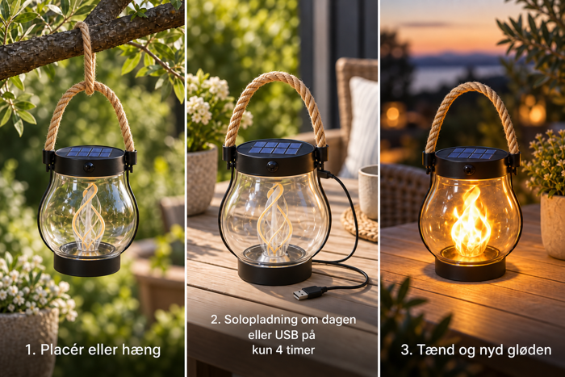
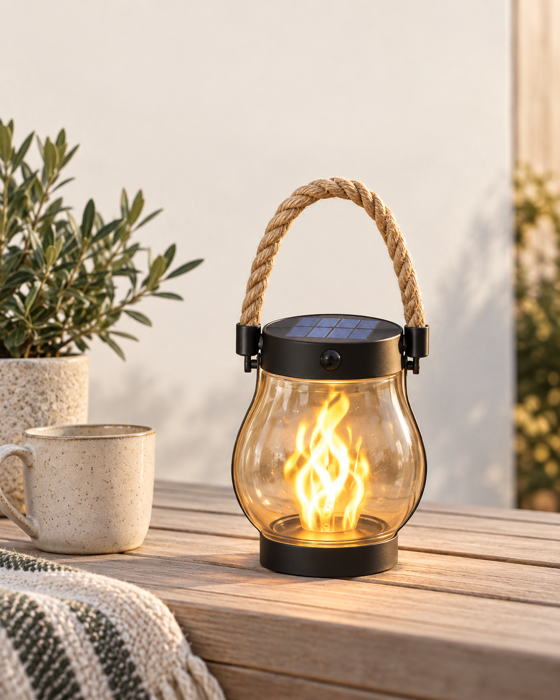
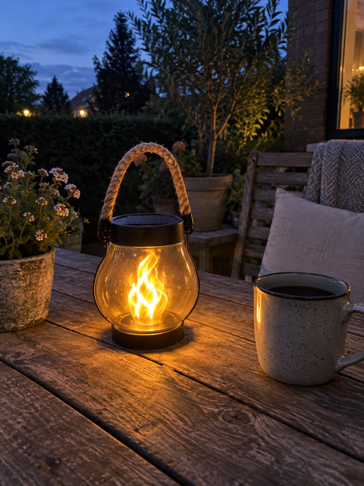
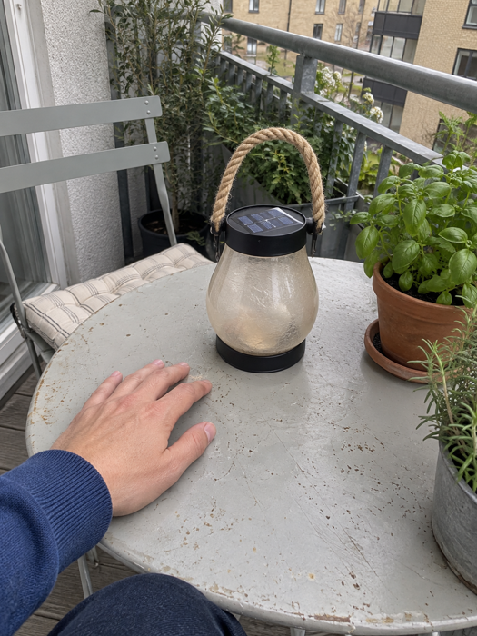
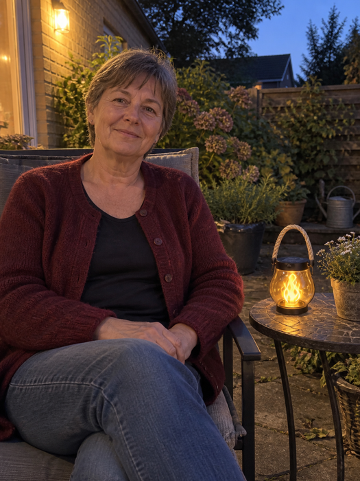
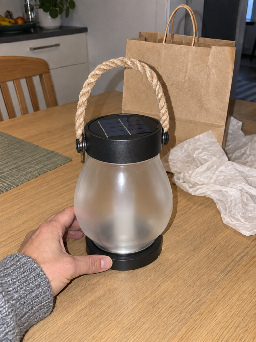
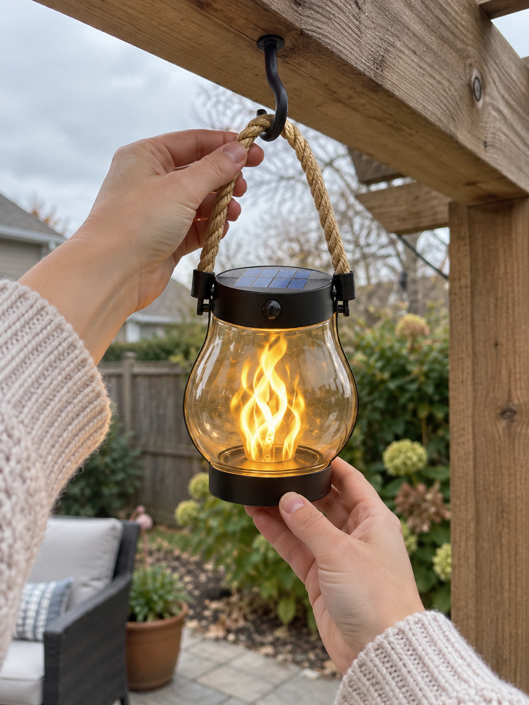
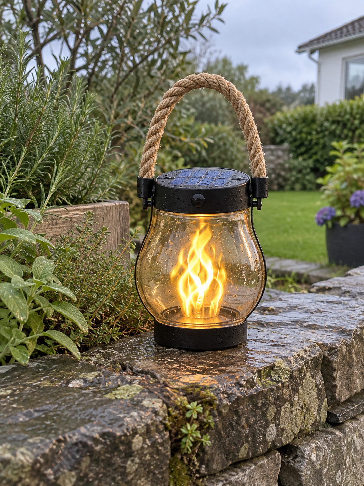
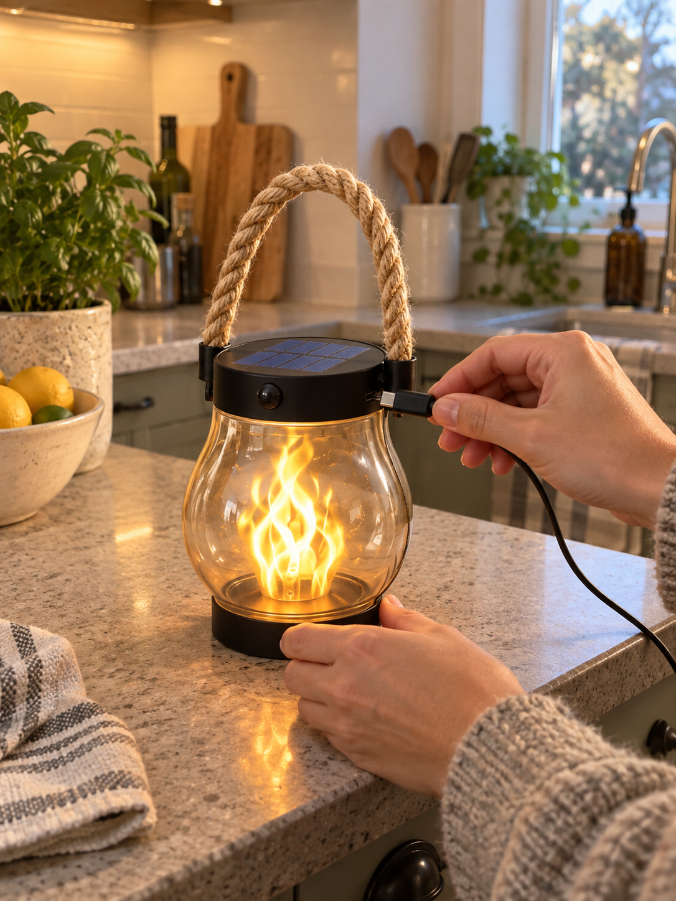
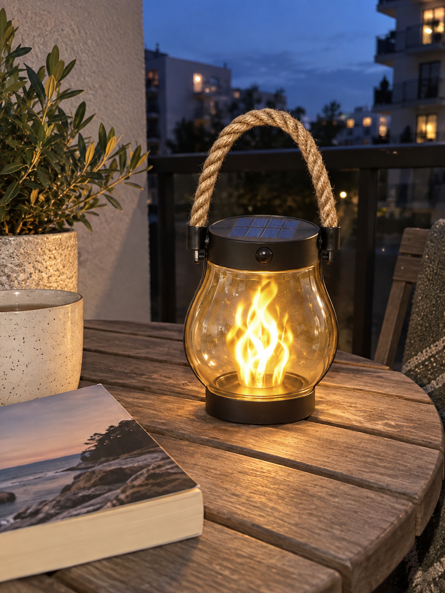

Dette er en test. Knappen viser den separate aftersell-demo.
Se Glødflamme sætte stemningen
Et varmt LED-flammeskær til de øjeblikke, du gerne vil blive lidt længere i.
ENKELT AT BRUGE

DET GØR FORSKELLEN

PRODUKTDETALJER
Eksempler på anmeldelser
Fiktive eksempler til denne demo. Navne og tekster er opdigtede, og billederne er AI-genererede. De er ikke kundeanmeldelser.

Lidt ekstra hygge til aftenkaffen
Jeg kan godt lide at tage kaffen med ud, når dagen falder til ro. Her på terrassebordet giver lanternen et varmt skær ved siden af koppen. Det er især kombinationen af det mørke metal og rebet, jeg synes passer fint til vores træmøbler.
Mette R.
Terrasse · Aftenstemning

Passer til mit lille altanbord
Min altan er ikke stor, så jeg vil gerne have ting, der ikke fylder hele bordet. Lanternen står her ved siden af krydderurterne, og der er stadig plads til en kop. Jeg kan også godt lide det enkle udtryk, når lyset ikke er tændt.
Jonas V.
Altan · Kompakt design

Et rart hjørne i haven
Jeg har en stol i hjørnet af haven, hvor jeg gerne sidder lidt om aftenen. Lanternen på det lille bord giver et hyggeligt, varmt indtryk ved siden af planterne. Det er en enkel detalje, men jeg synes, den passer rigtig fint til mit lille uderum.
Helle T.
Have · Varmt lys

En lille gave til uderummet
Jeg synes, en lanterne er en hyggelig gave til én, der holder af altan og have. Her står den klar ved gaveposen på køkkenbordet. Rebet og den sorte kant giver et enkelt udtryk, som jeg godt kan lide. Den fylder heller ikke meget på bordet.
Anders L.
Gaveidé · Enkelt design

Nem at hænge op i haven
Jeg satte den op under pergolaen på få minutter. Rebet føles solidt, og lanternen hænger roligt, selv når det blæser lidt. Det er en fin måde at få lys over spisepladsen uden at trække ledninger gennem haven.
Sofie K.
Pergola · Nem ophængning

Lyser videre efter regnen
Den står på muren ved mine krydderurter, hvor den ofte får en byge. Vanddråberne på glasset gør faktisk lyset ekstra hyggeligt, og jeg kan flytte den fra muren til bordet, når vi spiser ude.
Rasmus B.
Have · Regnvejr

USB-C når solen ikke rækker
På grå dage lader jeg den op på køkkenbordet med USB-C. Det er rart at have en hurtig løsning, når jeg vil bruge den samme aften. Den står stabilt, mens kablet sidder i siden.
Nadia F.
USB-C · Hverdagsbrug

Mit rolige lys til altanen
Jeg tænder den, når jeg tager bogen med ud efter aftensmaden. Den giver et varmt punkt på det lille bord uden at fylde for meget. Sammen med planten og træet føles altanen mere som et rum.